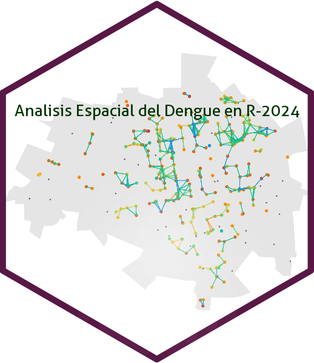

Localidad
Huevos
Riesgo Entomológico
Manzanas Calientes
Mérida
Bio : https://fdzul.github.io/web_site_fadm/
email : felipe.dzul.m@gmail.com
celular : 9999580167
slides: https://calm-hummingbird-41cb33.netlify.app/talks/hotspots_eggs/#/